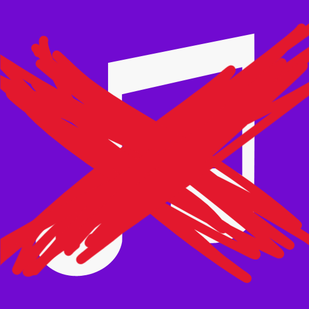
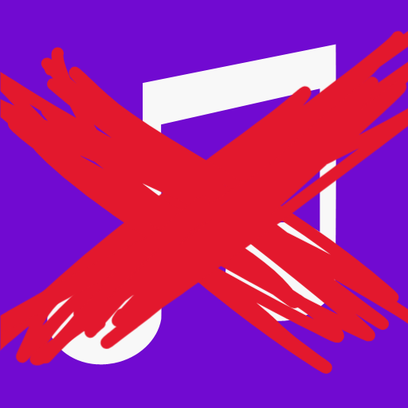
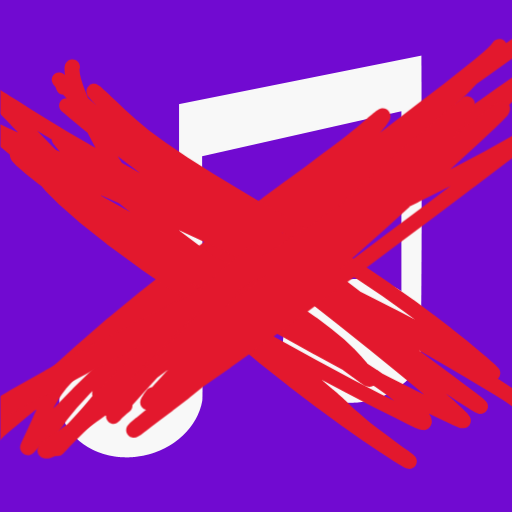
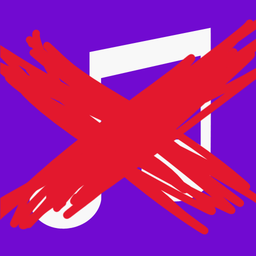

YOU WIN

YOU WIN

YOU WIN

YOU WIN

Gilgamesh attempts to strike you but you quickly duck under his swing.
You strike him with the sword you found earlier.
He drops to the floor and withers into dust.
You open the dungeon doors and are greeted with a mountain of treasure.
You fill your pockets and run towards the light.
Freedom at last.
THE END